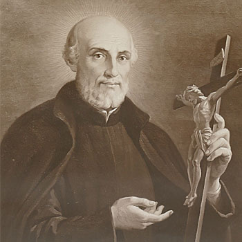
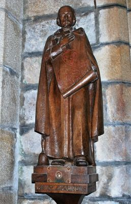

Isusovački blaženici
Svećenik
Bl. Julijan Maunoir
1606. – 1683.
Julien Maunoir želio je daleke misije, ali je poslanje pronašao u Bretanji. Na bretonskom je jeziku poučavao seoske zajednice, ribare i stanovnike otoka.
Tekst je preveden i prilagođen uz pomoć umjetne inteligencije.

Izvor slike


Izvor slike
- Spomendan
- 2. srpnja
- Zaštitništvo
- Nije navedeno u izvoru
- Životni vijek
- 1606. – 1683.
- Djelovanje
- Misije i evangelizacija · Obrazovanje i poučavanje vjere · Pisanje, znanost i umjetnost
- Razdoblje
- 17. stoljeće
- Datum rođenja
- 01.10.1606.
- Mjesto rođenja
- Saint-Georges-de-Reintembault, Bretanja, Francuska
- Datum smrti
- 28.07.1683.
- Mjesto smrti/mučeništva
- Plévin, Bretanja, Francuska
- Okolnosti smrti/mučeništva
- Umro nakon višekratnih bolesti tijekom misionarskoga rada.
- Uloga
- Svećenik
- Mučenik
- Ne
- Ostale oznake
- Misionar u Francuskoj; Apostol Bretanje; pučki misionar
- Pripadnost
- Isusovac
- Razlike u izvorima
- Datum smrti u podatcima zbirke: 28.07.1683. Raniji biografski izvor navodi 28.01.1683. Razlika izvora nije razriješena.
- Drugi oblici imena
- Julien Maunoir · Julien
Životopis
Julien Maunoir rođen je 1606. i školovao se u Rennesu. Isusovcima je pristupio 1625., privučen misijama u Kanadi. Učenje bretonskoga i teška infekcija ruke promijenili su smjer njegova života: pred smrtnom opasnošću zavjetovao se služiti Bretoncima ako ozdravi. Nakon oporavka i ređenja 1637. u Quimperu je upoznao Michela Le Nobletza te prihvatio njegove metode naviještanja.
S Pierreom Bernardom obilazio je kopnena mjesta i otoke na koje svećenik dugo nije dolazio. Misije su trajale četiri do pet tjedana. Crtežima je prikazivao Kristov život i vjerski nauk, a pjesmom pomagao ljudima pamtiti pouku. I sam je skladao crkvene napjeve. Tijekom četrdeset tri godine održao je stotine misija. Župnici su pomagali ispovijedanjem i vjeronaukom, a neki su se trajno pridružili radu.
Quimperska biskupija posebno ističe da je govorio i pisao na bretonskom te dijelio oskudnu prehranu ljudi kojima je služio. Nije se oslanjao samo na kratki uspjeh posjeta: odgajao je svećenike i laike, među kojima su žene katehistice imale važnu ulogu. Više od tisuću svećenika sudjelovalo je u misijama. Takva suradnja omogućila je da se duhovne vježbe i pučke misije ukorijene i nastave nakon pojedinačnih pohoda.
Stari opis otvorenja misije, sačuvan na stranici francuskih isusovaca, pokazuje brižljivu pripravu. Najprije je tražio biskupovo dopuštenje i suradnju župnika. Pristigli svećenici često su dolazili pješice, o vlastitu trošku. Euharistijska procesija, objašnjen dnevni raspored, dogovor o misama i zajednička večernja molitva oblikovali su zajednicu suradnika. Maunoir je umro u Plévinu 28. siječnja 1683.; stanovnici su željeli da počiva u njihovoj župnoj crkvi. Pio XII. proglasio ga je blaženim 1951.
Tekst je preveden i prilagođen uz pomoć umjetne inteligencije.
Pročitaj više na izvornoj stranici ↗